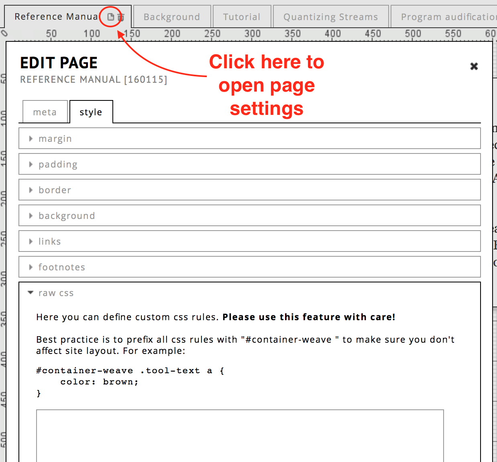

view public profile
RC content presented through some of our portals is peer reviewed, while the remaining expositions and other information are quality controlled by the individual author(s) themselves. As a result, the RC is highly inclusive.
The open source status of the RC is essential to its nature and serves its function as a connective and transitional layer between academic discourse and artistic practice, thereby constituting a discursive field for artistic research.
The RC creates a link between:
It is believed that the reflective space provided by the RC constitutes an essential part of the research process by providing a suitable structure in which to develop the relationship between documentation and presentation, whilst also retaining congruence with art itself.
The RC allows the user to create custom designed webpages called expositions. These expositions can contain many types of media including: text, video, images, and audio recordings. The way in which these materials are presented is highly customizable by the user. The exposition can be edited in an online drag-and-drop editor. Collaboration of multiple authors on the development of a single exposition is also possible.
In addition to expositions, it is also possible to upload single or multiple files and organize them as a work, which can also contain metadata about the work. A work in the RC can be used to represent self-sufficient artistic creations existing outside the RC, such as objects, compositions, recordings, videos, installations, paintings, photographs, books etc, but can also be used to represent events, presentations or expositions. You can add metadata such as the place of your work, the country or the material, technique or format. Moreover, the work can contain a collection of media files, which can later be accessed in used in expositions.
The RC forms the technical backbone of the Journal for Artistic Research (JAR): potential JAR expositions emerge from the range of the artistic research activities taking place in the RC. Moreover, submissions and peer-reviewing for JAR takes place in the RC. Authors may nominate or JAR editors may select expositions for development as JAR contributions.
If you think that the RC software might also support your research database needs then explore the possibility of using the RC as your repository by contacting us.
The Research Catalogue is provided by the Society for Artistic Research (SAR).
The RC profile page is both the central hub for your activities on the RC and a public presentation of your research activities. The RC allows you to create a detailed public profile containing biographical data, information on projects and events as well as a list of your RC objects such as works and expositions. The profile is divided into two sections, the upper sections contains an artist biography as well as information of research interests and the lower part, which is titled "Research" contains a list of RC works and exposition.
You can switch between your profile's editing mode (private) and your public profile, which is the profile as other users see it. Click on "my profile" for the editing mode and - below your image - click "view public profile" to hide all controls, grouping options and private research. You can thus control the public visibility of your RC objects.
view public profile
You can add a short text (for example a biography), that other RC users will see when they visit your profile. To edit this text, click "edit profile", on your profile page and scroll down. Here you can also add a tagline, set your country of residence, and list your research interests.
In addition to the profile description, it is possible to upload a more extended CV as a PDF. To do so, click "upload cv" below your profile picture.

upload your cv
As a user you can request membership of (some of the) RC portals. Certain actions can only be done if one is a member of the portal. For example: for some application programs, it may be required that you are member of the portal before you are able to submit an application for a program.
In most cases however, it is the task of the portal admin to make you a member of their portal, most portals do theirfore not allow users to request membership themselves.
Click edit to ask for a request to become a portal member, or remove yourself from a portal.
When you create a new work or exposition the newly created objects appear in default groupings ("Works" and "Expositions"). By using the "add grouping" button you can create custom groupings. You can arrange objects according to freely created categories. To add a new group click "add grouping" and enter the name of the grouping. You can sort your objects within a group, arrange the groups themselves and move object between groups via drag and drop. Click and drag a grouping to change the order of the groups. On the right-hand side of a grouping's title, there are a series of icons displayed. Here you can edit and delete the grouping and control its public visibility (using the circle icon). Only custom grouping can be deleted. If you have only one grouping containing content, its title will not be shown on your public profile. Empty groups will also not be displayed on your public profile page.
By clicking "Create exposition" you can create a new exposition object which will be opened in the RC exposition workspace editor. The title and abstract fields are obligatory. You can change these details later by choosing ☰ > edit details, or in the workspace editor by clicking the title of your research (at the top of you screen).
A work in the RC can be used to represent self-sufficient artistic creations existing outside the RC, such as objects, compositions, recordings, videos, installations, paintings, photographs, books etc, but can also be used to represent events, presentations or expositions. You can add metadata such as the place of your work, the country or the material, technique or format. Moreover, the work can contain a collection of media files, which can later be accessed in used in expositions.
You can collaborate on works by inviting co-authors, contributors and supervisors. Moreover, you can relate works to other works and expositions by using the "relations"-tab in the "edit details"-dialogue window.
A project is a container within which works or expositions may be produced. It is intended to represent academic research projects and degrees. Using the relations-tab, works or expositions can be linked to the project.
In case your project belongs to a degree, you can add ECTS-points.
You can decide if you want a grouping to be visible in your public profile.
By default, new groupings are visible in your profile as soon as they contain an RC object. To hide groupings from your public profile click the small circle icon on the right hand side of the grouping's name. If the circle is thin, the grouping will not be shown on your public profile.
The button "open exposition" opens the first page (or "weave") of your exposition. This is equivalent to the preview version in the exposition workspace.
object menu location
To access the menu, click on the ("hamburger") menu icon, located in the bottom right corner of an object (expositions or works). Some options are only available to the author of the object.
Change layout change the size of an object on the profile.
Edit workspace go to the workspace editor of this exposition.
Edit details change the meta data of your exposition, and control collaboration with other users. See edit research
Share change who can see and access this item.
Self-publish turn an exposition into a fixed state.
Please note that publishing is a one-way action, once published one can not unpublish. If you want to keep the option of removing an exposition, do not use this option.
Add to shortcut add a compact link to this object on the top of your profile.
Submit for publication submit an exposition to a portal for publication.
Connect to portal send a connection request to a portal.
Manage versions create or restore snapshots, see versions.
Export this function downloads a zip file, containing a HTML Export of the exposition. These HTML files can be opened on any computer with a browser, also offline. The start page is named index.html .
Delete delete an exposition or work from the RC.
This dialogue gives you the option of choosing the size of an object in your profile.
Depending on the length of the content, the abstract and additional information may be reduced or even hidden. Sizing objects differently allows to focus a reader's attention to important objects as well as to improve the overall readability of your profile page.
Four layout-templates are possible:
tall and across both columns
tall but only one column wide
short and only one column wide, the smalles possible size
short and across both columns
It is possible to create a snapshot of your exposition, which you can restore later.
A snapshot is created by going to ☰ > versions and clicking add snapshot.

version dialog
When you restore a snapshot, the original is not overwritten, instead a new exposition will be created from the snapshot.
There are three options for how to deal with the collaboration settings of a restored snapshot:
One can also restore as private and change the settings afterwards of course, through the collaboration and share menus.
Published expositions cannot be changed in the RC (this is per definition, to allow referencing content within these expositions by other researchers), but duplicates can !
To get an editable duplicate of a published exposition one has to:
This duplicate can now be edited, without the changes having effect on the original published exposition.
This dialog can be opened by ☰ > edit details or clicking the title of the exposition in the workspace editor.
Edit research dialog, showing meta page
At the bottom of the meta tab, one can also set the entry page: the weave that is the first page that the reader sees.
Table of content change the content menu, which the user can use to navigate between pages. See table-of-content.
Collaboration add co-authors, editors and supervisors. See collaboration
Relations create relationships with other objects on your profile, which will result in them being listed on the Research page. This page is shown when somebody clicks the title of the research on your profile.
The exposition view is the final result that the reader will see when he/she opens your exposition, for example by opening the exposition URL or when a user clicks "OPEN EXPOSITION" anywhere on the RC. All expositions have a navigation bar that shows if the user moves his/her mouse to the top. It contains a table of contents, abstract and other information.
While you are editing your exposition in the workspace editor, the PREVIEW button (right top corner) shows what the page will look like to the reader. If you already have a preview tab open, the second time you click PREVIEW, it will simply refresh, instead of opening a new tab.
While the EXPOSITION VIEW will always open the default entry page of your exposition, PREVIEW shows the page (or "weave") that you currently are working on in your workspace. Thus, you can also PREVIEW pages that are not yet listed in the table of contents.

workspace view
The workspace editor is the editor of content on the RC. It can be opened by clicking ☰ > edit workspace on an exposition listed on your profile. Of course you can only edit expositions of which you are a (co)author, editor or contributor.
When you are in the exposition editor, you can click the title to open a dialog to change the settings of the exposition. It is the exact same menu as you get using ☰ -> edit details on your profile. See edit research
Within the workspace view, one can enable one of these two subviews:
The note-view is to be used in conjunction with the note-tool of the RC. Notes are meant to be used to communicate between author and reviewers or supervisors and authors. The note-view displays a list of all the notes that are within an exposition. One can filter this list based on the author, assignee and depending on its status (resolved, unresolved). You can also change these parameters in this view.
The text-view displays the text content of your exposition. You can activate the text-view by clicking on the button on the view-options. You have the opportunity to show or hide changes. You can also sort the items and open the html-editor to directly edit the content in the text-view.
You can close both views by clicking on "close note view" or "close text view" in the top-right.
For more info on specific tools, see workspace.
The workspace tools are listed at the left side of the editor, under the Tools tab. To use a tool, drag it (click and hold the mouse button down) from the toolbar onto the canvas.
dragging a toolbar to the canvas

context menu location
The context menu of a tool is reached by clicking on the menu icon (see below), or right clicking (Apple: CTRL+click) inside a tool. The only exeption is the text tool, see text tool.

context menu
Edit (open edit dialog)
Open edit dialog
Copy/Paste
Copy/paste objects
Bring to front/Bring to back
Organise which object is in front of another.
Lock/Unlock
Lock means that one cannot make any changes until unlocked again.
Delete
Delete a tool
Tools can be resized by clicking and dragging the green borders with the mouse.
Tools can be rotated by clicking and dragging the yellow dot.
There are a few useful key commands in the editor. Selected tools have a green border.
| Key command: | Action: |
|---|---|
| ctrl + c | copy selected tools |
| ctrl + v | paste |
| ⌘(Mac) + a or ctrl + a | select all tools on current weave |
| ⌘(Mac) + click or ctrl + click on object | select multiple objects one by one |
| backspace, delete | remove selected tools |
Defaults for styling and options can be set for a tool, by double clicking it in the toolbar.
An RC exposition can consist of one or more pages, pages can be created by clicking the "+ add page" button on the top side of the editor. Note that new pages are by default private, they have to be explicitely added to the table of content to be visible. The order of pages cannot be changed in the editor, but it can in the table of contents.
One can change the first page the reader sees by changing the entry page. This is done by clicking the title of the exposition, which will open the "edit details" dialog. Here you can set the "entry page" (at the bottom of the dialog).
]
In the page settings dialog, you can change some of the styling for the whole page. It is opened by clicking the small white page icon next to current tab/weave title.
Page title
Set a title for the page. This title can be overriden in the table of content, so the reader sees a different one. This can be useful if you need to keep track of different versions of pages.
Description
The description is for personal reference and only visible to the author and collaborators on the exposition.
Iframe field
Replace the entire page by an external website by means of a URL. There are a few requirements to the URL for this to work:
Please note that if a correct iFrame url is provided, the entire weave within the exposition is replaced by that website, so any tools and page styling present in the workspace will no longer be visible to the reader.
If you want to combine external content with tools you should use the embed tool.
Here one can change:
The page can be deleted by clicking the trashcan icon next to the page title. Deleted pages cannot be recovered. Of course, if you want to make a page invisible to the reader it may be prefered to just remove it from the table of content.
A video tutorial about the text tool is found here
The text tool is designed for quickly adding text.
It has two states: when it is in active state you can change the text, if you click outside of the tool, you can move the object and change the size of the outer box. Double click inside of the tool to start editing the text again. Content is saved as soon as you exit the text editing state.
If you right click the text tool, you can find some extra edit options under edit. You can also (while hovering over a text tool with your mouse) click the ("hamburger") menu icon and choose edit.
In comparison to the HTML-tool, the text tool allows you to edit your text directly on the page. While the HTML-tool opens a new dialog window. If you need more styling options, use the HTML-tool. A text tool can be converted to an HTML-tool via the menu option convert to HTML tool.
See style options.
If a text is longer than its frame on the weave, a scrollbar is generated automatically. You can control the visibility of the scrollbar in options. The default setting is automatic.
See history.
The HTML-tool is designed for advanced text editing. It is a what-you-see-is-what-you-get rich text editor. Unlike the text tool, you can only edit its content in a dialog box.
You add the HTML Tool like any other tool: drag it with your mouse from the toolbar onto your canvas to the location where you need it.

html tool media tab
Text is edited in the media tab. To preformat the text, choose your settings before typing. The style can also be edited after typing by selecting either the whole page or sections of the page and changing the formatting options as required.
! important: If you copy-paste your text from Word, Pages, LibreOffice, Google Docs or any other text editor, note that not all fonts are available on every computer. Only the fonts that are listed in the RC editor will be rendered correctly for all readers (even if they do not have the font installed on their computer). A better practice is to import the text without any formatting.
You can choose standard type formats such as bold, italic, or underline and adjust the text alignment, font, and size.
To enlarge the palette of text styling options, click on the first button, show/hide toolbars. Here you will find different options for further formating options, such as listings, enumerations, citations. It is also possible to create hyperlinks (using the chain symbol), or to set anchors for navigation. If you hover over an icon you can get a short text description of the function. The top right button opens the editor in fullscreen.

html extended tool options
You can add pictures or further HTML materials such as i-frames (the embedding of HTML pictures or video is not possible with uploaded audio-visual content, which means that you have to publish a URL from an external server to paste it into the dialog). You can also choose the colour or the background of the text using the colour tools, insert symbols and tables, and control the edits with the show changes option.
If a text is longer than its frame on the weave, a scrollbar is generated automatically. You can control the visibility of the scrollbar in options. The default setting is automatic.
If you want to reuse the content of an HTML-tool, you can create your own templates. This function can be found in the media tab. After finishing the edit of your template, click save as new template and give the template a name in the dialog box that appears. To load a template, click load template and choose one from the list in the dialog box.
Finally, you need to exit the dialog window. If everything is the way you want it, choose submit and the text field will be loaded on the weave. To discard changes to the content, cancel the dialog box. If you want to delete the whole HTML field, including all content in it, click delete. Unintended deletions can be restored via commands – restore deleted tools.
To add a picture, drag and drop the picture icon from the tool palette onto the weave. As with all other tools, a pop-up dialog appears automatically and gives you the choice between "selecting" or "adding" an item.
You can upload image files in the following formats: jpg, png, tiff, gif, psd, tga, bmp. For uploading PDFs, please use the PDF-tool.
To add an item, choose "add" and upload the object from your desktop to the RC servers. Name the file and make a declaration of the copyright holder. Once an image is uploaded it is also automatically added to the simple media tab.
There are options available to change how images are resized in relation to the green border containing the image. This is controlled by changing the size parameter, which can be set to:
You can also change the position within the border ie: top-left, right-bottom etc...
In settings you are able to lock the aspect ratio. And you can allow readers to enlarge the image by activating the checkbox "on click open image in popup.".
If you want to use a picture as a hyperlink, paste a URL into the field on click open link.
You can also set a tooltip text (a text that shows when the user 'hoovers' his mouse over the picture) for the image. Set the show on hoover option to plain text and enter your text in the box below.
You can also make the tooltip display the copyright info, by setting the show on hoover option to copyright.
Please note, you can't change the copyright information in the "edit picture" window. To change the name or the copyright text, close the current dialog and go to the item in simple media and click edit (also double click) to open the edit media dialog.
As with the other tools, use the audio tool by dragging and dropping the icon from the tool palette onto the weave. A pop-up dialog window appears automatically and gives you the choice between "selecting" or "adding" an item.
You can upload audio files in the following formats: ogg, wav, mov, au, mp4 audio container formats; mp2, mp3, aac, pcm a-law, flac audio codec formats. All audio file formats will be transcoded to mp3s with 256kpbs.

Audio tool upload dialog
To select media they must first have been uploaded into "simple media." To add an item, choose "add" and upload the object from your desktop to the RC servers. Name the file and make a declaration of the copyright holder. After adding the file, you can edit the style of the audio player with the html style standards and choose between different play and display options.
Please note, to be used on our server, all media will be transcoded by the RC. This takes some time. During the transcoding process, the file name is greyed out in simple media. After the transcoding process has been finished you will receive an email notification that your media is transcoded and ready for use. For further information and technical questions see FAQ 2.6 or contact the RC User Support.
The audio player has a number of settings:
loop Will loop the playback when it reaches the end of the file.
autoplay The player starts to play back the file as soon as the page has been loaded.
stop other players If you are using multiple audio (or video) players on the same weave and your page is quite big, visitors may find it helpful if you prevent overlapping by defining which player is playing. With this option selected, all players (video player, audio player on slideshows, other audio players) will stop when the selected player is playing back a file. When simultaneous playback is desired, it may be helpful to use the Play-tool.
display minimal When selected, the player consists of only the play button and bar. You can also define some visual player settings. You can hide the whole menu bar or you can set the visibility of the volume or define if you want a player with as few options as possible.
As in the picture tool, if it is necessary to give textual information about the sound file, you can enter the text to be displayed when the mouse cursor hovers over the item.
As with the other tools, you can use the video tool by dragging it from the tool bar and dropping it onto the weave.
In the dialog box that appears you have the possibility to add (i.e. upload) items from your computer or select items from the "simple media" folder. At the moment, the RC supports the following formats: avi, mov, mp4, mpg video container formats; dv1394, h.264, mpeg2, mpeg1, mjepeg video codec formats. Both VBR and CBR are supported.
To add an item, choose "add" and upload the file from your desktop to the RC servers. All videos uploaded in this way will also be added to the simple media tab. Name the file and make a declaration of the copyright holder.
After adding a video, the player will not appear in the workspace editor, to view it, please click PREVIEW at the top right corner of the editor.
All media will be compressed to a smaller size, this is called 'transcoding'. This process takes time. During the 'transcoding' the file name is greyed out in your simple media. If you want, the RC can also sent you an email when transcoding has finished. You can find that option under profile, settings.
For further information and technical questions see FAQ or contact the RC User Support.
We highly recommend using smaller video files, for easier upload. If your file is extremely large, you may want to compress it before uploading using a program like Handbrake, FFMpeg or QuickTime (Mac).
The video player has a number of options:
loop Loops the video when it reaches the end.
autoplay The player starts to playback the file when the page is loaded.
stop other players If you are using multiple video players on the same weave and your page is quite big, visitors may find it helpful if you prevent overlapping by defining which player is playing. With this option selected, all players (video player, audio player on slideshows, other audio players) will stop when the selected player is running a file. When simultaneous playback is desired, it may be helpful to use the Play-tool.
display minimal When selected, the player constists of only the play button and the bar.
As in the picture tool, if it is necessary to provide textual information on the video file you can choose to display plain text or copyright information that will appear when the mouse cursor hovers over the item.
You can also use the play tool to synchronize selected video and audio tools.
The slideshow tool allows you to create a gallery of images that can be displayed in a loop. You can choose to start the slideshow automatically and you can add an audio file to each picture of the slideshow.
Drag and drop the slideshow icon onto the weave and the dialog window will appear.
To be able to select media you first have to upload an item into simple media or select media files from your works. To add an item, choose add and upload the object from your desktop to the RC servers. Name the file and make a declaration of the copyright holder. After adding the file, you can edit the style of the picture with the html style standards. To add a sound file to the slide, the file first needs to be uploaded to simple media.
In "options" you can define the position of the image within the frame. This is important when you are using images with different sizes and proportions. In settings it is possible to choose to loop the slideshow. If the loop option is enable, the slideshow will continue with the first slide once it reaches its last slide. You can choose to hide the navigation bar or give the reader the option to enlarge the picture with a click on the picture in your weave.
In automate you can set the autoplay options to:
When choosing autoplay you need to define the speed with which the slide will change. You can customise the duration of each slide (speed per slide) or let each slide change at the default speed.
As mentioned before, you can append audio files to each slide. Please note, you first have to upload the file into your simple media folder. In options, audio you can control the time of a crossfade (when one audio file fades out while a second fades in at a specified time). You can also choose the fade duration and the timeout of an audio file.
The PDF tool gives you the possibility to upload PDF documents containing texts, graphics or scores.
The advantage of PDF is that the display of its content is platform independent and looks the same everywhere.
The limitation is that PDF files, by nature, only support static (printable) graphics, not video or audio. In case text from a word processor needs to be combined with video and audio, use the HTML tool for the text and add the media separately using the other tools.
After dragging the icon to the weave, a dialog will show.
Click the button ADD MEDIA to open the dialog for uploading a PDF.
Be sure to upload the PDF itself in the PDF field, not PREVIEW. One is also requested to add copyright information. When done, click submit and the file will begin uploading.

The pdf tool dialog
The PREVIEW field is for changing the image that represents the pdf in the exposition for the reader. If no preview image is provided, a miniturised copy of the first page will be used.
Warning:
Do not use the hyperlink of the pdf file to provide a direct link to the pdf ! https://media.researchcatalogue.net/rc/master/73723.pdf?t=2629205589&e=1510816850
This link is temporarly generated and will become invalid. The reason for this is that the RC needs to control access (based on the exposition share status), and this is only possible with a temporary link.
The RC gives you and your reader the possibility to read the pdf directly in the browser if the browser supports this. To use this option check "display in browser" in option > settings of the "edit pdf" tool dialog box.
You can also double click the PDF tool and then switch to the options tab. Then click settings.
Extra settings dialog of pdf tool
As in the picture tool, you can provide further information using the hover option. To do this, select one of the options in the "show on hover" pull-down menu. In addition, you can create a plain text to be displayed when the reader's mouse hovers over the PDF preview. To use this, choose "plain text" or "copyright & plain text" from the pull-down menu and write your text in the text field below.
The play tool is designed to synchronize the playback of selected video and audio tools on the same weave. With this tool one can create a single control for playing back various media files at the same time. This can, for example, be used to document video installations with multiple screens and allows playing back synchronized combinations of musical voices and audio tracks. The play tool displays an image which can be clicked and functions as play and pause button. Clicking the image will start the playback of the selected audio and video files. While playing the tool another image will be displayed instead. Clicking this image will pause the players.
In the media tab one can upload two image files. One image will be the play-placeholder, i.e.clicking the image will initiate the playback of the selected files. The other image will be the pause-placeholder, i.e. clicking this image will pause the selected audio and video files on the weave.
In the options tab one can select from among all audio and video files on the weave. These must have been uploaded first with the audio and video tools. The selected files will be controlled with the play tool. The option “pause other players when playing” will ensure that only the selected media files will be played back.
The Shape tool is designed for placing simple graphic elements such as arrows and lines in your exposition. You can generate forms to structure your layout or to help navigation. You can create rectangles, circles and lines. You can choose if they're filled or not. You also have the possibility to specify the thickness of the frame and control the opacity of the elements. There are also four types of arrows (left, right, up, down). You can resize the elements on the weave by resizing the green frame displayed around the shape. By clicking and dragging the yellow point you can rotate an element.
The note tool allows you to organize your work on RC, comment on sections, and communicate with co-authors. Drag the note icon from the tool-pallett onto the weave. You can write directly into the note without opening a new edit-window. Each note has a time-stamp which is generated when the note is placed on the weave.
It is possible to define who is responsible for the content (a change or revision, correction) of the note and you can set a date for resolving the issue described in the note.
Notes are visible on the preview as well. Please check, that all notes have been removed from the exposition when you intend to share or publish it.
You can use the buttons to directly add the basic stylings, eg. highlight it with bold or italic font or structure it with numerations or lists. You can change the font-family and increase or decrease the indentation. You can also insert links.
"History" provides a log of all changes that have been made to the tool. If you have unintentionally deleted a tool, you can restore it using "restore deleted tools" in the commands.
The embed tool allows the integration of external content, such as videos or sounds, into RC expositions. Currently, the RC supports the following external content providers: Madek, Youtube, Vimeo, Soundcloud and Sketchfab.
The embed tool can be used by pasting the link from the page you want to embed in the URL field and clicking submit twice. The first submit initiates the processing of the link. How to retrieve the correct embedding link depends on the service. The main URL visible when opening the media content that is to be embedded can be used by the RC for the above mentioned services. Please contact support if you have trouble or questions regarding the necessary URL.
Content from Youtube and Soundcloud can be used in the play tool and the playback can be synchronized with native RC tools.
Content from Madek needs to have been made publicly visible before embedding is possible. Please copy the sharing link from Madek into the URL field of the embed tool.
Important: Some RC-based journals/portals do not allow the use of externally hosted materials. If you are making an exposition to be published in such a portal, please check their policy first.

image showing the style tab of an html tool
The style tab allows you to set the way an object looks on the outside. There are two ways of reaching the style tab:
or
Click on the small ">" to open one of these sections:
The style tab only sets the basic (mostly external) style of the object, text markup is done within the text or html tools.
It is possible to change the default styling settings for any tool, by double clicking the tool in the toolbar. After the default is changed, every newly created tool will initially use these new settings.
The history tab gives you the posibility to change the content within the tool to an older version. The versions of a text object are created each time you have clicked outside it (and the three animated dots show inside). With the html tool, a version is created each time you click submit.
The simple media tab can be found on the left side of the editor under tools. All your pictures, videos, audio and other media that have been added in tools onto your canvas will also automatically show up in simple media tab. You can click and drag files from the simple media tab onto your canvas.
There are three buttons below the list of files, from left to right:
simple media tools
Similar to simple media, works that have been added through your "My Profile Page" can also be dragged and dropped onto the canvas. Read more about adding works to your RC profile here.
The commands tab displayed in the workspace editor contains extra functions and settings for use in the workspace editor.
The overview displays a small window on the right hand side of the editor. It is useful for navigation on the weave while editing. It also shows objects that might otherwise be invisible. It will not be part of your exposition in the preview. In the final presentation of your exposition there is another navigation window in the menubar, which is similar to the overview.
Under the overview map there is a list of all the tools (called layers) that are currently present in the presentation. When you click on one, the editor automatically scrolls to that tool. You can edit, lock or delete a tool with the buttons below the list.
Objects can be aligned to a grid. By default, the grid size is set to 5x5 pixels. You can change the size of the grid by clicking the pull-down-menu and choosing one of the options from the list. You can also remove the grid by selecting 'invisible' from the same list. With "snap to grid" you activate objects will be placed according to the grid.
A rather unique feature of the RC is the absolute positioning of items on the weave. This makes it possible to position by pixels allowing for and open very free process of designing and navigating and linking to specific positions on the weave.
By using set default position you can set the entry position of your page (which is 0;0 top/left by default) to any other position of the weave. Scroll to the position you want readers to first when opening your exposition and click "set default position".
You may want to link to a special position on the weave and you have to generate the URL for this. After browsing to the coordinates or to the item you can generate the URL by clicking "show current position". You can copy the URL and use it for hyperlinking, anchoring or for publishing.
Every tool or item on the weave can be deleted by using the right-click (or by using the menu-icon) and selecting the delete function.
It is possible to restore a tool. Because the RC runs within a browser, you can't use the undo function of your browser or the shortcut on your keyboard. Every item has its own history which is listed in the "history"-tab in the edit-tool-dialog. Here you have the option restore previous states of the object. If the object has been deleted and is no longer directly accessible and can be restored deleted using the "restore deleted tools" command. After clicking it, a list of deleted tool appears.
When you are collaborating on an exposition, you can use the command "send collaboration message" to commuicate with the co-authors or contributors. Open the command by clicking on the button and you will find a message-window. In the upper part you can choose the partners you want to contact. Select them by clicking on the "+"-icon behind their names. Below you find a html-based message window. Here you can enter the message.
When one moves the mouse cursor to the top of an exposition, a menu bar appears.

the RC navigation bar
The navigation bar contains, from left to right:
Content This contains the table of contents and links to the authors. Please see the help section on table of contents.
Navigation Navigation is a graphical map of all the exposition's content on the current weave. You can click it to jump to a location.
Abstract Abstract, this can be changed by clicking title in the editor or ☰ > edit details on your profile.
Title / Meta By moving the mouse pointer the title of your research, a little window with metadata will appear. The link (URL) of the current page is shown, including the current scrolling location. This URL can thus be used to generate the hyperlink for internal linking. You can also use this link to cite a specific location.
Shows the latest and previous comments on your exposition from the RC community.
This displays the terms of as set by the Society for Artistic Research (SAR).
See the video tutorial on this topic.

an example of a contents list, made through the table of content
The table of content is designed to facilitate navigation through an exposition for the reader by means of the contents menu (top left corner).
In order to edit the table of content, click on the title of your exposition at the top of the workspace editor. This opens an Edit Research dialog, then click the "table of content" tab to open the list of entries.

Table of content dialog
To make a new entry, click on the index number and select the page (or "weave") from the drop down menu and click submit.
There are two optional fields:
Title
Specify a custom name for this entry to be used within the contents menu. If left empty, it uses the title from the editor.
X-COORD & Y-COORD
you can use this to create an entry that has an offset, which immediately opens the page on a specific location within the exposition. The X,Y values correspond to an offset in pixels. The Y offset is measured from the top. Instead of looking these values up by hand, you may also use commands -> show current position.
Tip: you can easily reorder the table of contents entries by clicking and dragging the boxes.
At the bottom of the table of content dialog, there is an option static menu bar to display the navigation bar continuously (instead of it automatically hiding).
Choose wether the links in the content menu should be displayed horizontally or vertically.
See the video tutorial on this topic.
It is possible to create hyperlinks between pages (or "weaves") of an exposition and within a single page. This process exists of two steps: fetch the link and creating the hyperlink.
In order to fetch a link to a different page within your exposition:
This will display a URL of the target page with the current scroll location. Copy the URL into the clipboard (Ctrl-C/Cmd-C). Note that you can also use this URL outside of the RC, as long as the exposition is public.
Now to turn a piece of text into a hyperlink:


Hyperlink dialog window
Within the hyperlink dialog there are a couple of options:
Within the "Commands" tab on the right-hand side of the editor there is a checkbox labeled "Overview." Clicking the checkbox will open and close a tab on the right-hand side of the editor. It contains both a map and a list of all objects in the exposition.
The overview map outlines all tools on the page, their size and position. By moving the red rectangle, one can jump to a specific position on the page.
Below the overview map, there is a list of all objects. If you click one of these tools, you go directly to that tools location. This can also be very useful when trying to find tools that have somehow become hidden, for example if another tool has been placed on top.
There are number of different ways to share and publish your work on the RC. This functionality can be accessed using the object menu (i.e. clicking the menu icon) for the given work or exposition on the "My Profile"-page.
Works and expositions can be shared (made visible to other people).
The share option can be found under the object menu ( ) of each object on your profile. There are three modes available:
) of each object on your profile. There are three modes available:
As long as the object has not been published it remains editable.
Self-publishing makes an exposition no longer editable and publicly visible.
Expositions can be submitted to portals (such as journals) for publication. Click "submit unlimited publication to" and select the portal. While the exposition is in review it can no longer be edited. The portal admin or editor will contact you regarding the reviewing process.
A work or exposition can be connected to a portal without being published by the portal. The portal admin will receive a notification and has to confirm the connection. Once the connection has been approved it will be shown in the object's metadata and the object may appear on the portal page and portal feeds. Connected works may for example accompany a published exposition or represent a connected event.
It is possible to "follow" other users, portals, and objects such as expositions and works. Once you are logged in you will see "follow" links in the bottom right corner of objects displayed on the front page, other user's pages and other places on the RC. "Follow" links also appear on user and portal profile pages. Once you follow a user, portal, or object new publications, edits, comments etc. will be displayed on the "FEEDS" page. Clicking the wrench icon opens up a dialog in which you can adjust the precise information you want to see for each user, portal or object you follow.
You can search the RC by using the search field in the top right corner. Moreover you can use the "advanced search" functionality, which allows for filtered searches and and searches according to specific criteria such as object type, keywords, authors, etc.
The Research Catalogue allows you to work together on a research exposition with multiple users. This is called collaboration.
There are 3 types of collaborators:
An author of an exposition can invite collaborators through the collaboration tab of the exposition: click the menu icon (1) and 'edit details' (2) next to the research on your profile. If you are already in the workspace editor, you can also click on the title of your research at the top of the editor.

Location of the collaboration dialog
Choose 'collaboration', search for the user you want to cooperate with and add her or him by clicking on their name.
Inviting a supervisor by typing it into the supervisor box
The users that were added will show up as a list below the field. After clicking submit, collaborators will receive an invitation from you in their message-box which they can accept or decline. When accepting the invitation, the collaborator will have access to your exposition workspace and he will be able to edit it.
If you want to remove a collaborator, click the "x" behind their name in the field they were added. If you remove a supervisor, the supervisor will receive a request to remove them (they have to approve the removal).

Collaboration tab
Note: If a users name in the list is enclosed in brackets ( [ name ] ), it means that the invitation is sent successfully, but has not been accepted yet by the receiver.
While collaborating on an exposition, there are several ways of communicating with each other
Using the note tool Notes are the RC equivalent of yellow post it notes. You can simply drag one from the toolbar onto the exposition workspace. See also the note tool help.
Send collaboration message You can send a direct text message to your collaborator using the Send collaboration message found under the commands_ tab.
Posting a comment In expositions where you are not a collaborator, you can still leave comments by going to the top bar of the exposition and clicking the Comments.
It is possible to create footnotes and popover weaves in the text, HTML and picture tools. The terms "footnote" and "popover" are used almost interchangeably here. Footnote, however, refers rather to the textual concept of a footnote, i.e. a particular use of the functionality explained in this section, whereas popover is used when referring specifically to the appearing popover window. (There is a tutorial video explaining the footnote workflow on the RC Video Tutorials page) These are displayed when the RC user reading the exposition clicks the footnote link or, depending on the settings, when he or she mouse the mouse pointer over the link. This functionality makes it possible to create footnotes in texts, but also create popovers of any size containing RC objects of any type. There are a number of different ways of creating footnotes.
In order to create a footnote in the text or HTML tool one selects some text, which will be the footnote link and clicks the "Insert/Edit Link or Footnote" menu item (see image).

Selecting text as a footnote link
A new footnote can be created by using the left tab in the appearing dialog window. In this window one can set:
Finally, click "Add Footnote" to confirm and create the footnote, which will subsequently appear in the list of footnotes on the left side of the screen.

Preview of a footnote
All footnotes are listed in the "Footnotes" tab on the left hand side.

List of footnotes
There are three icons displayed to the right of the title of each footnote. The first icon opens a window which allows editing the title, size, and styling of the footnote. The second icon (the wrench) opens up the footnote in the weave editor. Here one can edit the footnote just like any other weave. One can leave the footnote weave editor by clicking the link "back to main weave" displayed to the left of the main tab. (see image).
"simple text" footnotes are in fact automatically generated normal footnotes with your text inserted in a text tool. This has consequences if you want to adjust the size of a "simple text" footnote as a whole, since you would also need to change the size of the tool within that footnote after resizing. To edit a "simple text" footnote internal tools, simply double click it in the footnote list.
When you are done editing: you can return to your main weave through the link in the top of the editor.

Back to main weave link
If you need to change the screen position or display settings of an existing footnote, the best way is:
Instead of using text as footnote links it is also possible to use numbered links. The numbers will be filled in and adjusted automatically. In order to create auto-numbered footnotes create a footnote in the text or HTML tool as described above but without selecting any text. An "x" will be inserted where the cursor is placed. This "x" will be replaced by the correct number when the text is displayed.

Auto-numbered footnote in the editor
The numbering starts at 1 and encompasses all text and HTML objects on the weave. Numbering is performed by object and proceeds from the top and left to the bottom and right of the page.
It is also possible to use images as links to footnotes. When clicking on the image or moving over it with the mouse cursor the popover will be show. In order to use an image as a footnote click the menu icon on the bottom right of the image (or right click the image) in order to open the context menu. Click the item "add footnote" from the context menu and fill in the appearing dialog window.
This is a tutorial to describe how an RC Portal can be used for publication workflows. It is aimed at portal administrators. The process typically consists of 4 stages:
There are two ways of setting up accounts:
The author can create an account for him/her self, by clicking REGISTER on the research catalogue homepage. After filling in the form the author will immediatly get a basic account. To gain a full account, which has the right to create content, the author will be requisted to send a proof of identity and signed SAR agreement letter.
The portal admin creates the account(s) for the author(s). This option is common when a large number of users need be created at once. In this case, the responsibility of identification and making sure that the SAR agreement letter is signed lies with the portal administrator creating the account(s). The agreement letter can be found on basecamp or requirested through RC support. Please send the signed agreement letters to RC user support.
The administrator can create accounts by going to the admin section and opening the user page. Click + at the right top corner of the screen. After creating the account, the username (which is an email address) and password can be sent through email. Be sure that in the roles tab, the "basic account" option is turned off. This means the user will have a full account and is able to create content.

edit user roles dialog
For safety, admins creating user accounts should:
The next stage is the writing of the exposition itself. It is important to note that it has to be an exposition, a work object on its own cannot enter a review workflow on the RC. Works can however be embedded as part of an exposition to be reviewed & published. The author does not need to be a member of the portal user list in order to make a publication request to it.
During the writing stage, it is common that the exposition in progress is shared with one or more other readers or collaborators. These collaborators can use the notes system to leave feedback. There are three types of collaboration roles:
The author can invite RC users to these roles by going to edit details or clicking on the title of their exposition in the workspace editor and choosing "collaboration". The collaborators will receive an invitation (in RC messages) that has to be accepted before they can start to collaborate.

collaboration tab
Once the writing is sufficiently progressed, the next step is that the author sents a request to publish the exposition. This is done through the ☰ menu, which is located on the "my profile" in the right bottom corner of the exposition summary. This will open a dialog where he/she can choose to which portal the exposition should be published. Within this dialog the author can also indicate weither the exposition should be published "limited to portal" or "unlimited to portal". Limited to portal means that when the exposition is published, it is only visible to members of the portal.
Important: the choice by the author is only a suggestion, in the end, it will be the portal admin that decides in which way (limited or unlimited) an exposition is published.

publication dialog
Once the author has done this step, no further changes can be made to the exposition by the author. It will be listed on their profile under the status "in review".
The portal admin will receive a message from the RC that a new work is ready for review. It will also be available under the “review” section in the admin section.
If the author needs to make changes to an exposition, the publication request has to be declined by the portal administrator. He/she can also do this under administration > review and clicking the X next to the research title.
The most common next step is to assign reviewers to this research. However, for a person to be available as reviewer, they first have to:
The reviewer role does not require a full RC account, it is enough to be a limited RC user.
For the second requirement, the user has to be added to the reviewer pool of the portal. This can be done by going to the Portal page of the admin section and then choosing edit. Under the ROLES tab, RC users can be added as reviewers for that particular portal.
Once a reviewer is part of the review pool, they can be added to the research exposition. To do this, go to review tab of the administration part of the RC, and click the edit page. Here you can add (or remove) reviewers to the research. Reviewers can be either added single blind (they cannot see each other), or double blind (they cannot see the author's name).

the edit request page, found when clicking edit icon on an exposition in review
The reviewers will see a list of expositions that they are reviewers of on top of their "my profile" page. Within the exposition they can use the "REVIEW" menu to leave notes to themselves, which are only visible to them and the portal administrator. Typically further communication between the portal admin and the reviewer takes place through the messaging system or by e-mail.
Once the review process has been completed, the portal can choose to either publish or dismiss the exposition. If the exposition is dismissed, this means that the editing rights are returned to the author. The author can resubmit the same exposition later, at which point the review process starts again.
If the exposition is accepted, the exposition will be frozen permanently from further changes. Depending on the portal settings at this point also a DOI will be deposited through cross-ref. Please note that publishing is meant as a one way step, unpublishing is to be used only as a very last resort measure. If one does not expect to have a research be their till the end of time, it should not be published.
Immediately after publication the exposition will show up on the RC frontpage and visible to any visitor to the RC website (so also non-RC users). If this is not desired, one can also choose to publish an exposition "limited to the portal", this means only members of the portal can see the exposition.
To reach the administration functionalities of the RC website, click on administration, located in the top right corner. To return to your own profile, you can click on the Research Catalogue logo. Only portal admins have access to these pages.

admin main page
There are 5 pages to manage content for portal admins:
User
Adding, removing and editing user information to this portal
Portal
Portal settings, reviewers, sending portal mails
Research
Management of connected expositions
Connection Requests
Management of connection requests
Reviewing
Review process of expositions and objects that are waiting to be published
If you are an admin in multiple portals, you can switch between them in the top right corner of the site, through the drop down menu.

admin user page
| Action | Icon |
|---|---|
| Add a user |  |
| Edit a user |  |
| Remove a user |  |
| Login as a user |  |
Important: when you type a new user name, the RC tries to find if the user exists already. If it does, the RC will show a dialog requesting if you want to add the existing user to the portal instead of creating a new account. It is highly discouraged for a single person to have two accounts on the RC, so normally admins are expected to simply add this existing account.

user profile dialog
Change the name, alias, email and password (optional). An administrator can also change these fields without having to change the password (by leaving the field empty).

user portal settings dialog
This controls to which portals a user is added. A user can be added to multiple portals at once. Portals which are selected are marked by a gray background.
user role settings dialog
When the option is turned on, the user cannot create any content. The can still become supervisors or read expositions.

user email settings dialog
Here you can set which emails the user should receive.
The admins can log in as another user, for example to help resolve issues with a specific account. While logged in as another user, you will see a red bar on the top of your window that shows who you are and enables you to switch back to your own account. This feature is useful while helping somebody with issues specific to their account.
Keep in mind: you become this user in all the tabs of your browser window, so you would temporarly loose some of you admin permissions while navigating as this user.
The portal tab shows you which users are administrators on the portal. It has 3 actions:
| Action | Icon |
|---|---|
| Portal mail |  |
| Edit portal settings | |
| Delete a portal | |

portal mail dialog
For advanced layout, you can use the HTML button. Please note that it is not recommended to use URI encoded images in email, since some email clients do not like this. Better practice is to have the images hosted somewhere externally and link form there using a
Note that for RC wide mailings, one should always use the JAR Template and type = Announcement setting. This makes the mailing include an unsubscribe link, that is required by EU law. All other combinations of settings will currently not include this link !
The JAR Template includes several standard fields (title, contact and a banner image), be sure to check that you are not adding duplicates in the email body text itself. One should always test before requesting it to be sent out.
The announcement option has to be scheduled at least 1 day in advance. The sending of the email will have to be approved by SAR.

portal edit common screen
Here you can edit the basic information of the portal. View text allows you to change the template that is used to display expositions on the portal page: available placeholders: $author, $title, $portal, $edition, $published, $url, $now.

portal edit roles
Here you can edit the various roles of the portal:

portal edit issues
Here you can set the title of the issues (as in journal issues), one can use these in Reviewing.

portal edit sumbmissions
Here you can set which objects can be submitted to the portal.
Here you can manage all research connected to the portal. Expositions are sorted per issue. Those without a publishing date, have not been published yet. There are a number of actions available:
| Action | Icon |
|---|---|
| Edit | |
| Unpublish | |
| Comment | |
| Block |
The unpublishing of expositions is not encuraged. Published expositions are supposed to be a permament reference, never to be deleted or changed. If an exposition is to be continuously changed or temporary, it is better to not publish, but simply set its sharing settings to public. When unpublishing an exposition make sure with the author of the exposition that there are no connected works that have been deleted since, otherwise it may be impossible to reconstruct the publication.
It is possible for users to connect a work or exposition to a portal. The works that have been accepted by an admin of the portal will be listed here. Requests can be accepted with: V or rejected with: X.
The reviewing page allows managment of expositions that have been applied for publication by the author. Reviewers can be assigned to these works. There are two styles of reviewing: single blind or double blind. Single blind means that the author cannot see the reviewers. Double blind means that the reviewers cannot see each other.
Please note that within the KonCon portal, supervisor notes can be seen by reviewers.

reviewing edit reviewers dialog
Review tag and comment can be used by the admin to organize the current in review documents.
It is also possible to change supervisors in the collaboration tab. Please note that only the admin can change collaborators, the author cannot change anything during review.
 ;
;
Once the reviewing process is complete, there are three scopes in which the research can be published:
| Publish | Visibility |
|---|---|
| Restricted to portal | Only visible to members of the portal |
| Limited | Only visible to members of the RC |
| Unlimited | Visible to everyone |
If you reject a request for publication, it is possible to edit the standard message that is sent to the author of the exposition.
Video Tutorials
Video tutorials showing various processes in the RC.
Forum
It is recommended that you post your questions here, so the answer to your question is shared with other RC users. Within the forum you can also post:
Mail support
Directly mail support. For instance when the problem concerns personal details of your profile or research:
| date | subject | content | |
|---|---|---|---|
| 12/01/2016 | Groups |
The new group feature will allow users to:
|
| date | subject | content | |
|---|---|---|---|
| 31/07/2017 | Exposition Export for Offline Reading |
Expositions can now be exported (downloaded) for offline reading. The export contains all media files and pages as html files. |
|
| 08/05/2017 | Portal Membership Requests |
Users can request to be added as portal members (on the respective portal profile page) and edit their portal membership settings from their profile page.
Portal admins can add existing RC users to their portal (use the autocomplete of names in the “add user” dialog window). |
|
| 08/05/2017 | Database Overhaul |
The RC database has been completed. Virtually the entire system has been rewritten. Performance has been improved significantly. |
|
| 08/05/2017 | SVG Files |
The picture tool now supports SVG files. |
|
| 16/03/2017 | Recent Bugfixes |
16/03/2017
We are planning to launch the overhauled database (expect much faster loading times!) before the 1st of April.
Casper Schipper
|
|
| 18/06/2016 | Video Upload Issue |
Video Upload Issues:
Currently we are investigating an issue regarding the uploading of large video files (> 400MB). It appears that uploads sometimes break off around point, without reporting any error. Most uploads below that size do not appear to suffer from the problem. A tempory solution is splitting the video in parts with iMovie, Windows Movie Maker or the terminal tool ffmpeg*.
|
|
| 12/01/2016 | Footnotes |
Footnotes can now be inserted into text (via link buttons) and will be displayed as popovers, that may contain any tool. Footnotes can be selected and edited via the tab in the editor on the left hand side. Images can also be used as footnote links. Further documentation will be added to the RC Help. |
|
| 12/01/2016 | Inline Text Tool |
There is a new inline text tool. Text can be typed directly into tool on the editor. It supports a reduced subset of HTML functionalities and filters pasted content (from Word etc.). Tools can be converted to HTML-Tools for further editing. |
|
| 12/01/2016 | SSL |
We have switched completely to SSL/HTTPS encryption. This significantly improves the security for transmitting passwords and confidential data. |
|
| 12/01/2016 | Work details page |
The work details page has been overhauled. It now contains a listing of all media files and each file can be described and downloaded. |
|
| 05/10/2015 | Follow Feature |
This feature allows users to stay informed about other users’ and portals' activities as well as projects, expositions, works, and degrees. Users can bookmark objects and users and will receive messages about changes, comments, publications, and new activities. This will improve the possibilities of communication and interaction among users. |
|
| 02/09/2015 | Vertical line in the shape tool |
There is a new shape (vertical line) available in the shape tool |
|
| 02/09/2015 | EDIT link in the menu bar |
There now is an "EDIT" link in the menu bar (when viewing expositions), which directly links to the worspace editor for the respective weave, so one can easily switch back and forth between editing and viewing. |
|
| 02/09/2015 | "Decline" message is editable |
The decline message (for submitted expositions) can now be edited. This is particularly useful if one wants to return editing permissions to the author before publication. The message can now be edited in order to prevent misunderstandings and to clarify the reason for returning the permissions. |
|
| 02/09/2015 | Notes Layers+Fixes |
Notes will now always be on the top layer. Moreover a number of bugs have been fixed which had prevented notes from being closed. |
|
| 02/09/2015 | Warning when closing the browser or tab |
The system will now ask for confirmation when one attempts to close the browser while editing unsaved data (in the tool edit windows, e.g). Moreover, the back (and forward) browser buttons are disabled while editing unsaved data in order to prevent data loss. |
|
| 01/07/2015 | GIF Animations |
It is now possible to embed gif animations in expositions. |
|
| 01/07/2015 | Audio File Encoding |
We have increased the quality of the audio file encoding and now use 256 kbps mp3 encoding (no longer 128 kbps). |
|
| 01/07/2015 | Messenger Changes |
It is now possible to access all messages (sent and inbox) using "more" and "back" buttons (no longer only the 30 most recent messages). It is also possible to select messages (all messages or individual messages) and delete them or mark them as read using a pull down menu at the bottom of each group ("inbox" and "sent"). |
|
| 03/06/2015 | Search |
The search function has been substantially overhauled. It now includes autocompletion of names, keywords, and titles; improved performance; and results will be displayed on several pages. |
|
| 01/06/2015 | Portal Messages |
The sending of portal messages (such as newsletters) has been overhauled. The message will be queued and send latest 5 minutes later. The status in the log will change to "in progress". If an error occurs the sending will resume automatically. When the sending has been completed a message with statistics will be sent to the sender. Furthermore messages with duplicated content will only be sent once. |
|
| 01/05/2015 | Portal Profile Pages - Recent Activities |
"Recent Activities" on the Portal Profile Pages now only shows expositions that have been published (not objects that are in review). |
|
| 24/04/2015 | Publish in Portal |
Members of a portal can now select publications to be limited to a portal when submitting research. The admins of the respective portal have to create an issue for publication and may then publish the research. It will only be visible to members of the portal. Under the author a flag will be displayed, such as " Limited publication. Only visible to members of the portal : <name of portal>". |
|
| 16/03/2015 | Messages on portal page |
The list of portal admins now includes links to send messages to each admin. (http://www.researchcatalogue.net/admin/portal/list?context=1). A message to all members of a portal will now also be sent to the portal admins. The “send portal mail” window also includes a tab titled “log,” which lists all portal mails. Furthermore sending mails no longer blocks other activities on the RC, i.e. one can now continue using the RC in a new tab while sending a message. |
|
| 16/03/2015 | New profile pages |
The public profile pages have been updated, extended, and new functionality has been added. The update includes the exposition of publicly accessible works (exhibitions, installations, etc.) and the addition of new elements “project” and “degree.” These can be connected to portals and supervisors can be linked to the projects and degrees. Moreover, a CV may now be uploaded and the user profile includes new fields such as “keywords” and “tagline.” Custom groups containing expositions, works, degrees and projects can be created and rearranged (drag & drop). The public visibility of all objects can be set by the user. Documentation can be found here: http://www.researchcatalogue.net/view/13747/130354/ |
|
| 28/10/2014 | Warning messages (font and zoom) in viewer |
When a page is opened in a browser, the text is actually rendered by the browser dependent on the browser version, the operating system and the fonts that are installed on the computer. This can lead to research appearing differently in different environments. In order to at least highlight issues, we included a message at the top of each page if (1) a font that is needed is not installed (2) the zoom factor is not set to 100%. These messages can be closed so as not to impact on the viewing experience. |
|
| 28/10/2014 | Setting tool template in a research exposition |
The initial values of the tools in the toolbox can now be adjusted by double-clicking on a tool in the tool box (rather than dragging it onto the page as usual). For example, a double click on the text tool lets you set the standard size of a text tool making it unnecessary to manually adjust the tool every time it is used. Note: tool templates are set for all tools in an exposition; the settings work for all contributors but only within a single exposition. |
|
| 28/10/2014 | Slide show automation |
It is now possible to play/autoplay the slide show. In the slide show properties, a new section in the options tab ('automate') allows to set the mode (no, start on click or start on page load) as well as the amount of time each slide is displayed for. Note: when the slide show is set to start/pause on click, it is not possible to enlarge an individual image per click in a popover. In this case, the tick box 'on click open image in pop up' in options > settings will be disabled and its value reset. A message will indicate this. |
|
| 19/09/2014 | Text on hover |
It is now possible to display an additonal text as the mouse pointer moves over the tool. Previously, it was only possible to display copyright information (which some people misused in order to display a different text). If text and copyright is to be shown, the copyright will be shown below a line at the bottom of the text. The text can be entered in the tool's properties, option tab. |
|
| 18/09/2014 | Loading animation as page loads |
Tools that are still loading when a page is opened are now shown with a gif in the centre in order to indicate that content in this area of the page is still loading. In small pages with few images, this will be next to invisible. |
|
| 18/09/2014 | New Tool: Object Viewer |
The objet viewer allows to display 3D objects that can be turned on mouse move. We opted for a very simple implementation, which requires a set of images to be uploaded in a zip archive that show the object from all (necessary) sides. See http://www.thoro.de/page/3dnp-introduction-en for a description of the process and a Blender script. Note: Blender is not straightforward to use. In time, we will develop an extended help file for this. We may also work towards alternative solutions for the generation of those images. |
|
| 05/09/2014 | Submission notification |
A user who submits his/her research to a portal will now receive a message that the research has been received by the portal and that contact will be made. This is meant to reassure a user about what is actually happening. Previously, the research was simply set to 'in review'. |
|
| 25/08/2014 | undo changes/restore deleted tools |
There is now a new tab 'history' in every tools properties, which can be accessed bu double-clicking on that tool. 'History' shows a list of changes to that tool. By clicking the respective 'restore' button, a previous version of that tool can be restored. Furthermore, should a tool have been deleted, it is now possible to undelete the tool. In the workspace under the commands-tab, click 'restore deleted tools' in order to see all tools on a page that have been deleted. Press 'restore' of the desired tool to restore this tool. Go to the tools history to return to a previous version should this be necessary. |
|
| 22/08/2014 | Double-blind peer review |
Reviewers can now be assigned to a submission either as single or as double-blind reviewers. If the latter is chosen, the auther name is (where possible) made anonymous (for example, the HOME menu or the reference and whereever the exact user name appears as text in an exposition.
However, if the spelling is different, or if the name appears in supporting documents (say a pdf or in a video) the RC will not be able to anonymise this. It has to be picked up in the editorial process and blocked. |
|
| 21/08/2014 | update notification |
All Administrators and Portal-Administrators will now receive notifications of updates to the RC added to this page http://www.researchcatalogue.net/portal/updates/ |
|
| 21/08/2014 | Message notifications |
Messages sent to a user by either the RC or another user are now send as part of the notification email. When a user receives a message, he or she does now not need to log into the RC to read it. However, in order yo reply, the user will need to click on the reply link at the bottom of the notification, which takes him or her to the RC messaging system where the reply needs to be entered. |
|
| 21/08/2014 | Hiding notes |
If a user hides notes (in preview, menu: reviewing > hide notes), those notes now remain hidden even after a refresh. Before, a user needed to hide them again, after the page was refreshed. |
|
| 12/08/2014 | co-authored research |
Co-authored research will now be listed in a user's profile in a separate section 'my coauthored research'. |
|
| 12/08/2014 | menu in text tool text editor |
The text tool text editor will now remember the status of its menu (i.e. whether the extended menu is visible or not). No need to re-open the extended menu again for each tool that is edited. |
|
| 06/05/2014 | Copyright tooltip |
When the mouse pointer is moved above a media file, the copyright holder of that file can now be displayed also for videos and audio. In the properties of the tool, click on 'Options' and select 'Show copyrigt' to display the name of the copyright holder that was entered when the file was uploaded. |
|
| 31/03/2014 | Note tool |
The tool acts like a Post-it. It can be placed on a page to leave notes for yourself or for collaborators. In 'Note View' (upper right corner in a research workspace), all notes can be seen in a list and assigned to a collaborator as task. Reviewers may add notes; these are only accessible to editors. |
|
| 31/03/2014 | Changes to the RC workspace |
The RC workspace layout was simplified. There is now only one menu bar at the very top. Additional functions have been moved to the 'Commands' tab below the toolbox, or, if they are tool specific, they can be accessed with a right-click on the respective tool on the page to open its context menu. Commands tab:
Context menu (key shortcuts are indicated for Windows operating systems):
Preview:
Text View:
Note View:
|
|
| 31/03/2014 | Notifications to user groups |
Portal administrators can now send notifications via email to the users associated with the portal. The types of notifications are:
Notifications can be send to all users of a portal or those with full accounts only. Additionally, the administrator of the Research Catalogue portal is able to send noitification to members of the Society for Artistic Research. |
|
| 31/03/2014 | Research Catalogue update history |
The update refers to this new page http://www.researchcatalogue.net/portal/updates/ allowing to see a history of all Research Catalogue updates from March 2014 forward. Only RC Admins can add/edit RC update information. |